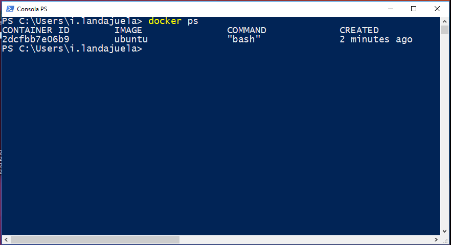
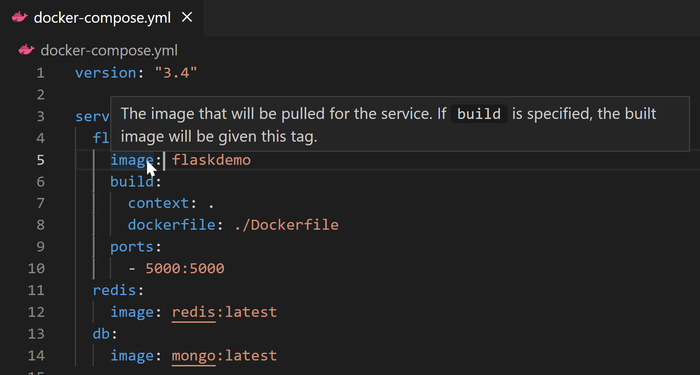
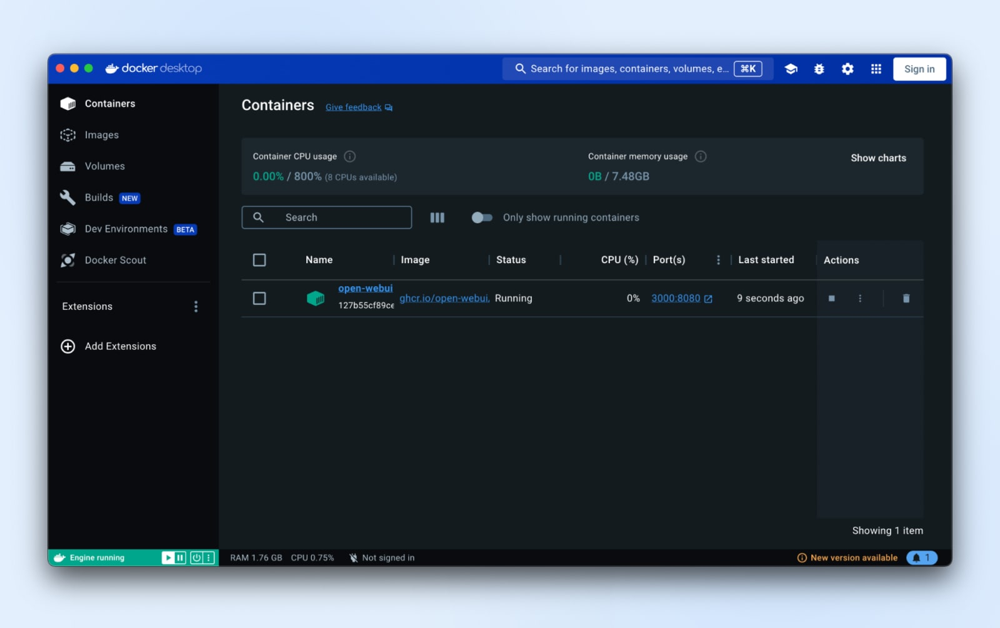
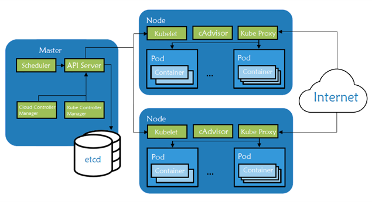

Herramientas de Docker
Docker cuenta con herramientas que facilitan el desarrollo, la ejecución y la administración de aplicaciones en contenedores. Algunas permiten trabajar mediante comandos, mientras que otras ofrecen interfaces gráficas o ayudan a coordinar varios servicios.
Docker CLI (línea de comandos)
Docker CLI es la interfaz de línea de comandos que permite interactuar con Docker mediante instrucciones escritas en una terminal. A través de ella se pueden construir imágenes, iniciar contenedores, consultar su estado y administrar recursos.
| Comando | Función |
|---|---|
docker build -t nombre . |
Construye una imagen a partir de un Dockerfile. |
docker images |
Muestra las imágenes disponibles localmente. |
docker pull imagen |
Descarga una imagen desde un registro. |
docker run imagen |
Crea e inicia un contenedor a partir de una imagen. |
docker ps |
Muestra los contenedores que están en ejecución. |
docker ps -a |
Muestra todos los contenedores, incluidos los detenidos. |
docker stop contenedor |
Detiene un contenedor en ejecución. |
docker start contenedor |
Inicia un contenedor detenido. |
docker logs contenedor |
Muestra los registros generados por un contenedor. |
docker rm contenedor |
Elimina un contenedor detenido. |
docker rmi imagen |
Elimina una imagen local. |
Nota: los comandos utilizan nombres genéricos. En la terminal, se debe reemplazar
imagen o contenedor por el nombre o identificador
correspondiente.

Docker Compose
Docker Compose es una herramienta para definir y ejecutar aplicaciones formadas
por varios contenedores. En lugar de configurar cada contenedor mediante
comandos independientes, permite describir los servicios de una aplicación en un
archivo YAML, normalmente llamado compose.yaml o
compose.yml.
En ese archivo se pueden definir, entre otros elementos:
- Servicios: componentes de la aplicación, como backend, frontend o base de datos.
- Imágenes o instrucciones de construcción: indican qué imagen utilizar o cómo construirla.
- Puertos: establecen qué puertos se publican para acceder a los servicios.
- Volúmenes: permiten conservar información y compartir archivos.
- Redes: establecen la comunicación entre los servicios.
Una vez definida la configuración, el comando docker compose up
permite crear e iniciar los servicios descritos. También se pueden consultar sus
registros, detenerlos o eliminarlos mediante otros comandos de Compose.
Ejemplo de uso: una aplicación puede utilizar un contenedor para el backend y otro para MySQL. Compose permite definir ambos servicios y su comunicación en un solo archivo.

compose.yamlDocker Desktop
Docker Desktop es una aplicación que proporciona una interfaz gráfica para trabajar con contenedores desde Windows, macOS y Linux. Integra herramientas de Docker y facilita tareas que también pueden realizarse mediante la terminal.
Entre sus funciones principales se encuentran:
- Visualizar los contenedores, sus estados y los puertos publicados.
- Consultar, descargar y administrar imágenes.
- Revisar registros y detalles de los contenedores.
- Trabajar con proyectos de Docker Compose.
- Acceder a configuraciones y herramientas del entorno Docker.
Docker Desktop resulta útil para quienes comienzan a utilizar Docker o prefieren administrar sus proyectos mediante una interfaz visual. No sustituye los conceptos de Docker Engine ni la CLI; ofrece una forma integrada de acceder a ellos.

Kubernetes
Kubernetes es una plataforma de código abierto que permite administrar aplicaciones que se ejecutan en contenedores, especialmente cuando existen muchos contenedores distribuidos en diferentes equipos. Su función principal es coordinar su despliegue, escalado, disponibilidad y recuperación.
Entre sus capacidades más importantes se encuentran:
- Escalado: aumenta o reduce la cantidad de instancias según las necesidades.
- Autorreparación: puede reiniciar o reemplazar contenedores que dejan de funcionar correctamente.
- Balanceo de carga: distribuye el tráfico entre las instancias disponibles.
- Despliegues y reversiones: facilita publicar nuevas versiones y regresar a una versión anterior si es necesario.
Relación con Docker: Kubernetes no es un componente de Docker ni depende exclusivamente de Docker Engine. Es una plataforma independiente que administra cargas de trabajo en contenedores. Docker Desktop puede ofrecer un clúster local de Kubernetes para desarrollo y pruebas.

Ventajas y limitaciones del uso de Docker
| Ventajas | Limitaciones y aspectos a considerar |
|---|---|
| Portabilidad: facilita ejecutar aplicaciones en distintos entornos compatibles. | No elimina todas las diferencias entre sistemas operativos, arquitecturas o configuraciones. |
| Eficiencia: los contenedores suelen consumir menos recursos que máquinas virtuales completas. | Los contenedores comparten el kernel del anfitrión y no equivalen al aislamiento de una máquina virtual. |
| Consistencia: ayuda a mantener dependencias y configuraciones similares entre desarrollo y producción. | Las imágenes y configuraciones deben mantenerse actualizadas y gestionarse correctamente. |
| Automatización: permite integrar la construcción y el despliegue en flujos de trabajo. | La seguridad, el almacenamiento, las redes y la supervisión requieren configuración y mantenimiento. |
Casos de uso
Docker se utiliza en diferentes etapas del desarrollo y operación de software. Algunos ejemplos habituales son:
| Caso de uso | Aplicación |
|---|---|
| Entornos de desarrollo | Cada integrante de un equipo puede trabajar con versiones y dependencias consistentes. |
| Pruebas de software | Se pueden crear entornos aislados para ejecutar pruebas sin alterar el sistema principal. |
| Microservicios | Cada componente de una aplicación puede ejecutarse y actualizarse en su propio contenedor. |
| Integración y entrega continua (CI/CD) | Las imágenes pueden construirse y probarse como parte de procesos automatizados. |
| Despliegue en la nube | Las aplicaciones empaquetadas en contenedores pueden desplegarse en infraestructuras compatibles. |